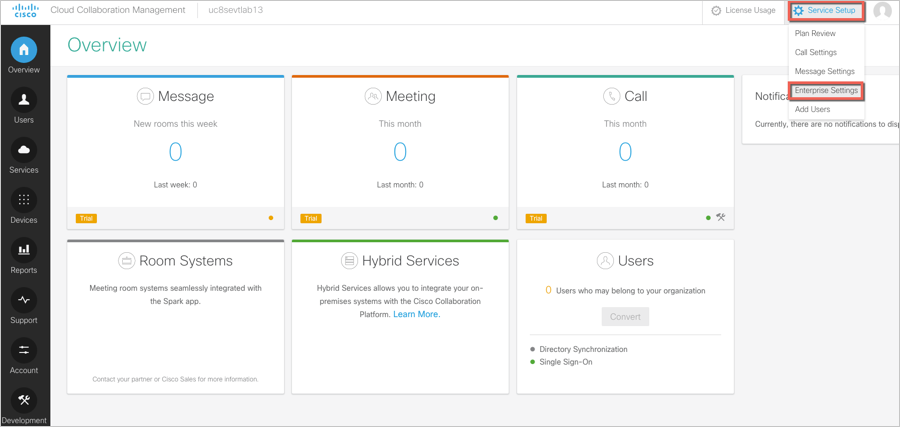
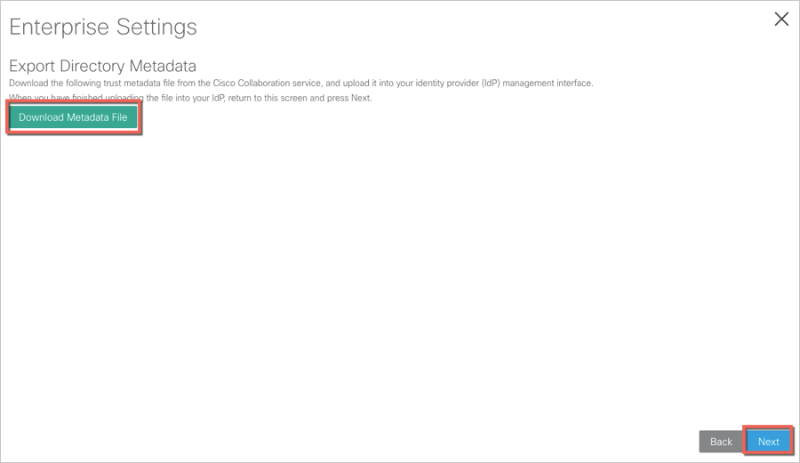
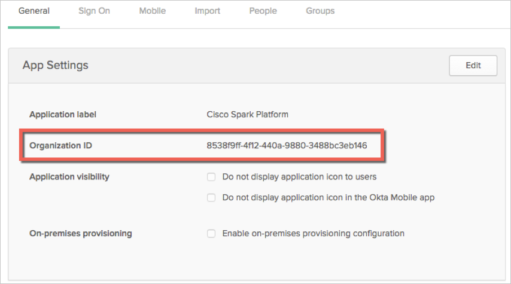
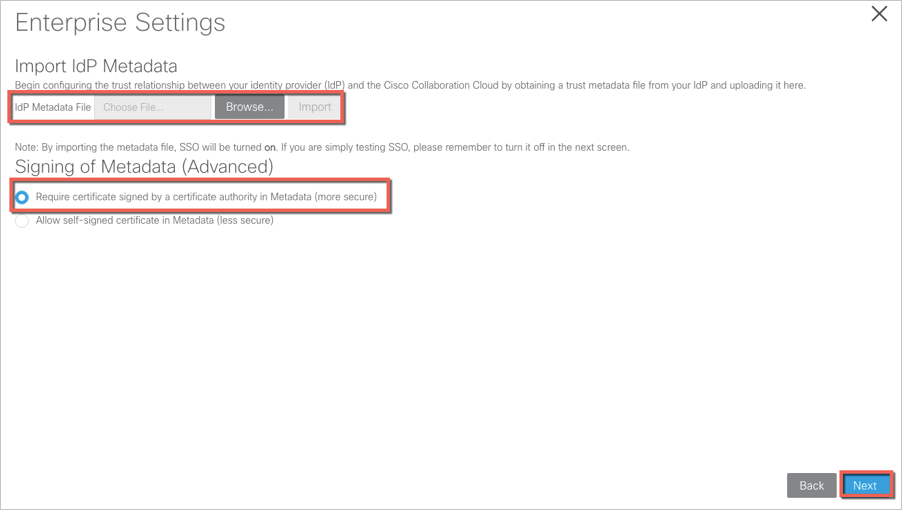
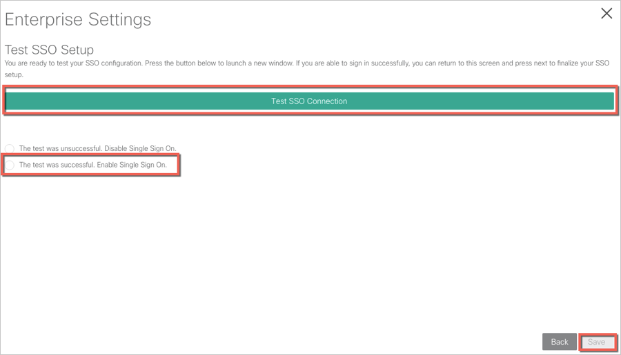

Login to your Cisco Spark Platform account as an administrator.
Select Enterprise Settings from the Service Setup drop down menu:

On the Enterprise Settings page, select Integrate a 3rd-party provider, then click Next:

Click the Download Metadata File button, then open the Metadata file in a text editor:

In the Metadata file, locate and make a copy of the value of entityID.
The value should look like: https://idbroker.webex.com/acme.
In Okta, select the General tab for the Cisco Spark Platform app, then click Edit:
For Organization ID, enter the last part of the value you just copied from the entityID value in the Metadata file.
For example, if the value for the entityID is https://idbroker.webex.com/acme, enter acme into this field.
Click Save.

Copy this metadata and save it as an xml file, then click Import to upload it to Cisco Spark Platform. Next, check the Require certificate signed by a certificate authority in Metadata option, then click Next.

Click Test SSO Connection, after which you should see a screen indicating the text was successful. Check The test was successful. Enable Single Sign On option, then click Save.

A Single Sign-on succeeded page appears.
Done!
Notes:
SP-initiated flows are supported.
IdP-initiated flows and Just In Time Provisioning (JIT) are not supported.
For SP-initiated flows:
Enter your Email Address.
Click Sign In.